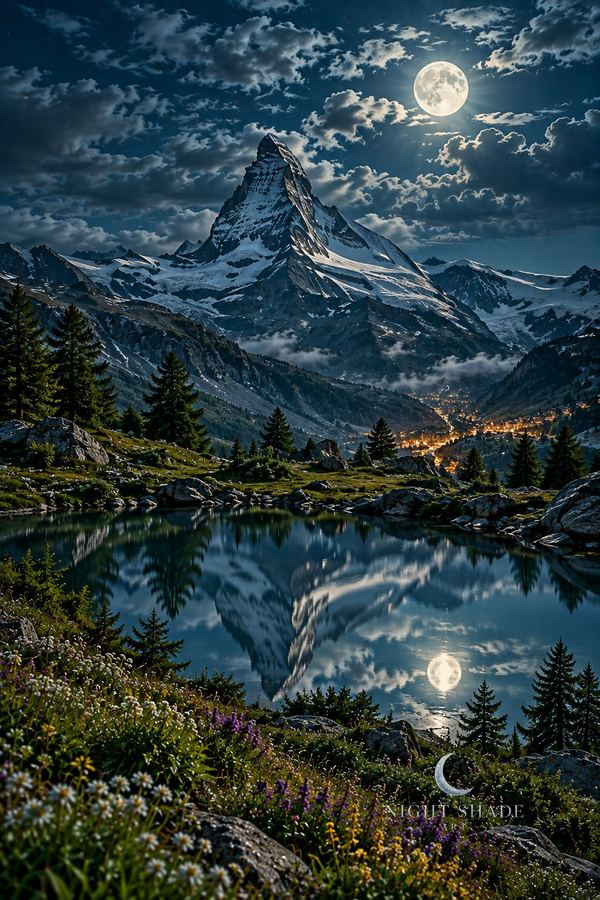
Matterhorn Alpine Moon
The Matterhorn’s pyramid rises over a still alpine lake while moonlight silvers snow ridges and wildflower meadows.
$29 poster · $69 framed (12×18) · $149 peel & stick wall mural (4×6 ft)
13 mountain art prints · $29 poster · $69 framed · 12×18 · $149 peel & stick wall mural (4×6 ft) · shipping included
Every piece in this collection is a mountain scene at night: real peaks you can find on a map, seen under a full moon, often with a few warm windows glowing in the valley. The Matterhorn over a still alpine lake, the three towers of the Dolomites’ Tre Cime, Mount Fuji behind the Chureito Pagoda, Yosemite’s Half Dome, Lake Louise in the Canadian Rockies, and the Old Man of Storr on the Isle of Skye are all here, along with quieter scenes like a wildflower meadow above an alpine village and snowy peaks above the clouds.
Each one comes three ways: a 12×18 inch enhanced matte poster, the same print in a black frame, or a 4×6 ft peel and stick wall mural for a whole feature wall.
Bedroom. Moonlit scenes are dark and blue by nature, so they sit well where you want the room to feel calm. The stillest pieces are the lake scenes: Banff Lake Louise Moon and Patagonia Lake Peaks, where turquoise water mirrors the peaks, and the misty Scottish Highlands Loch. A framed 12×18 print fits above a nightstand or a small dresser.
Living room or a feature wall. Big, recognisable silhouettes read best from across a room: the Matterhorn, Mount Fuji and Half Dome. If you want the mountain to fill the wall rather than hang on it, the 4×6 ft (48×72 in) peel and stick wall mural uses the same artwork, needs no paste, and comes off most smooth painted walls cleanly.
Office or hallway. Detailed scenes reward a closer look: Lauterbrunnen Valley with its waterfall, Zhangjiajie’s stone pillars, and Machu Picchu in the mist.
A place you have been. Many people buy mountain art to remember a trip. If you hiked the Dolomites, skied near Zermatt or drove the Skye loop, the place-named prints are meant for exactly that. Pairs work well too: the Matterhorn with the Dolomites for an Alps wall, or Skye with the Highlands loch for Scotland.
Not sure which size suits your wall? The print size guide walks through 12×18 placement, and every piece page has larger previews.

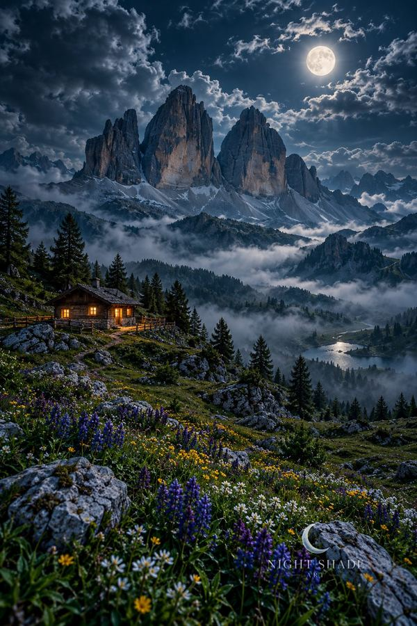
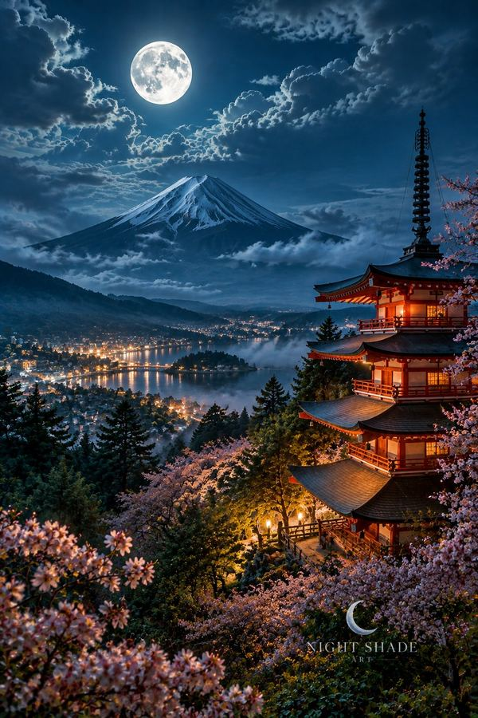
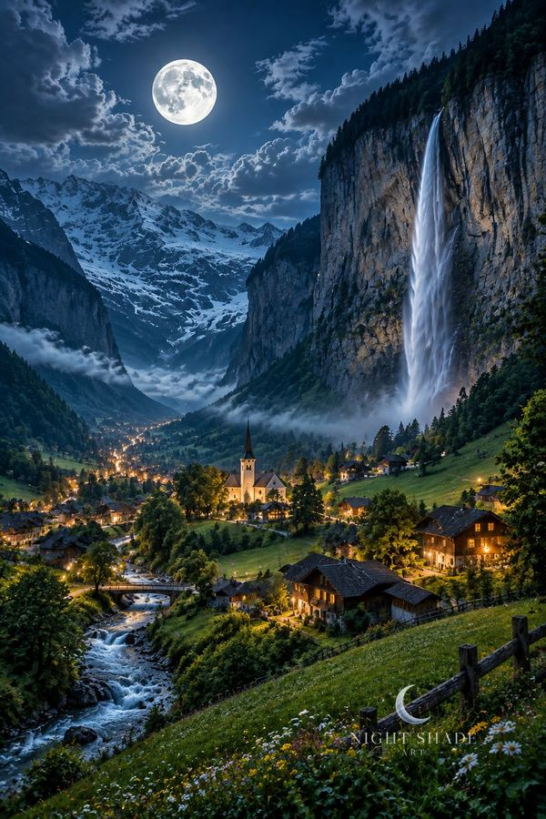
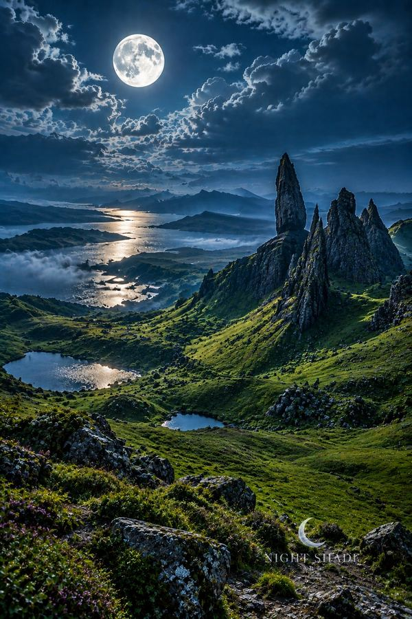
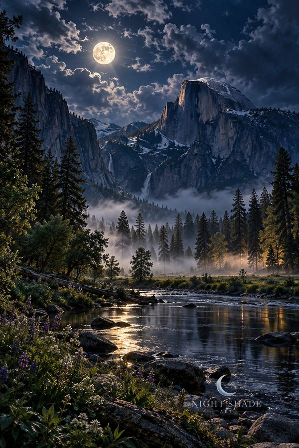
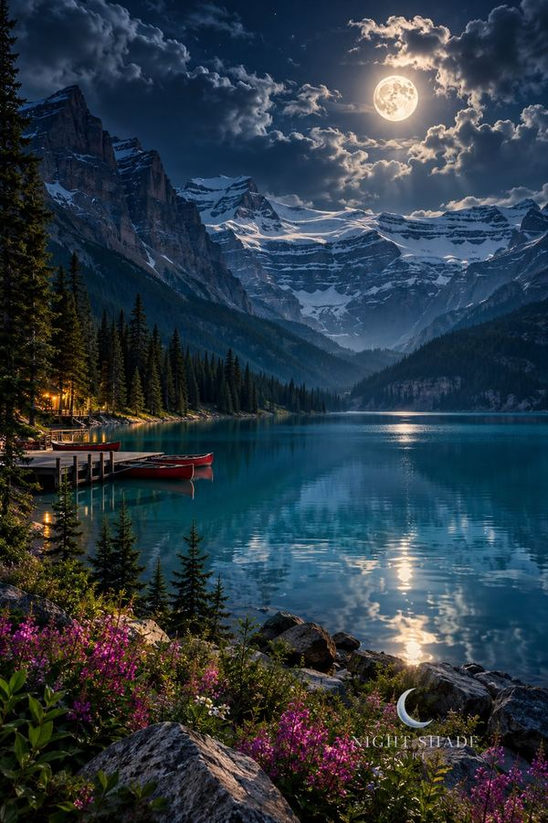
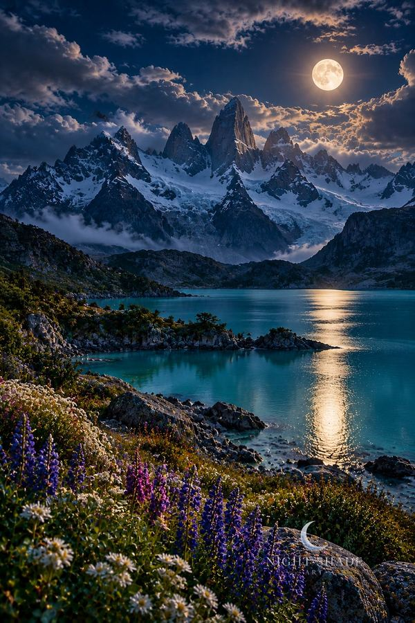
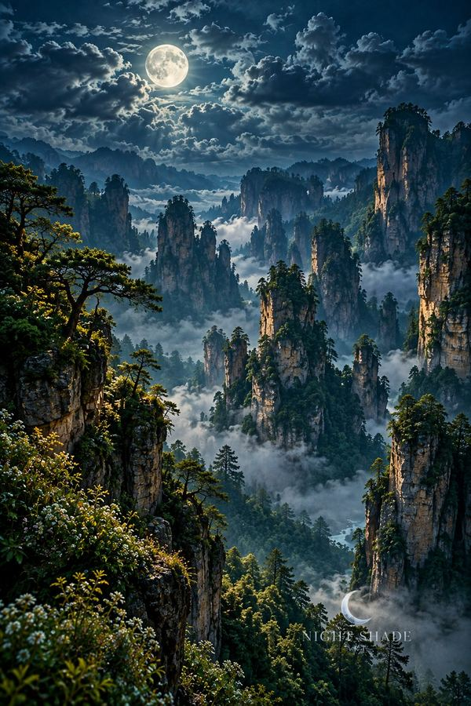
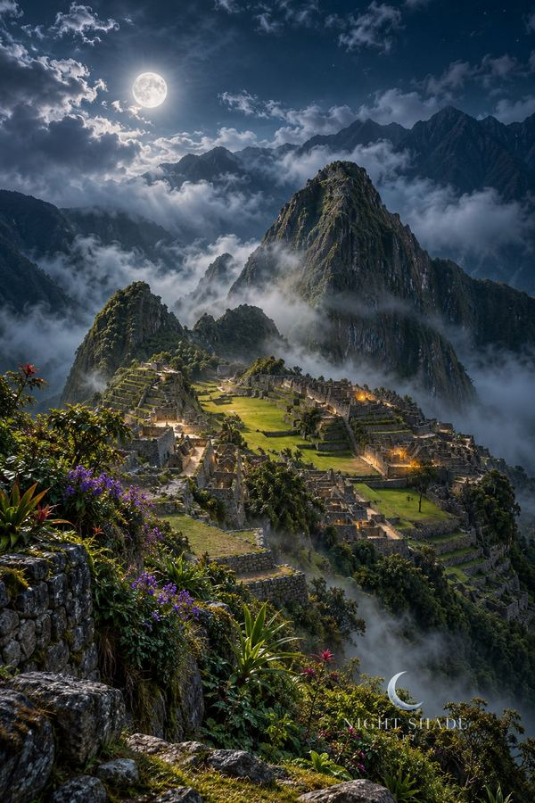
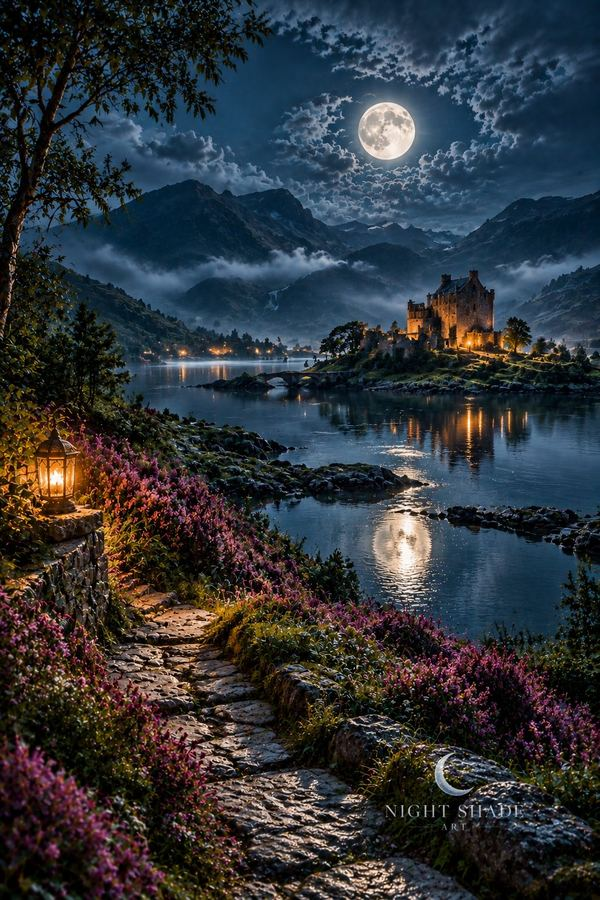
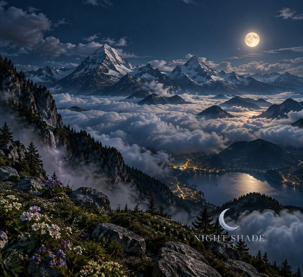
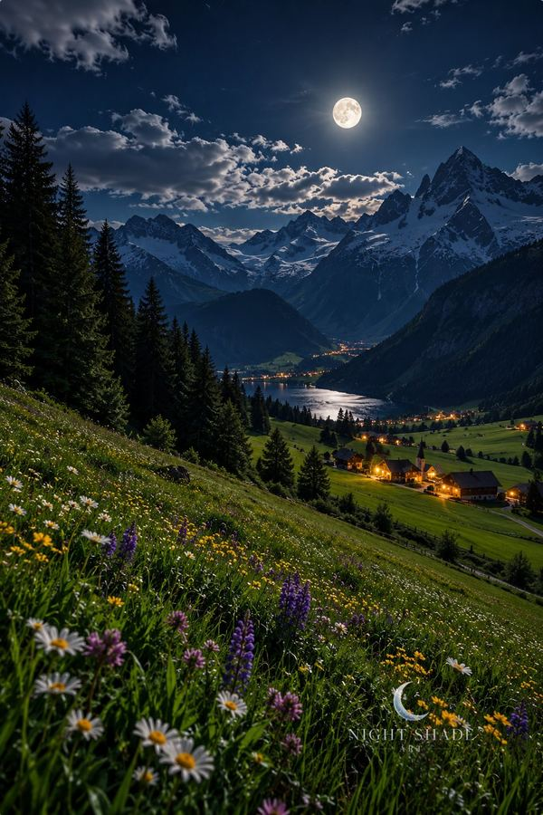
What sizes and formats are available? A 12×18 inch enhanced matte poster ($29), the same 12×18 print in a black frame ($69), and a 4×6 ft (48×72 in) peel and stick wall mural on removable polyester ($149). Shipping is included on all three.
How long does a mural take? Murals are printed to order and ship in 1–2 weeks.
Are these real places? Most are named landmarks, reimagined at night. Patagonia Lake Peaks and Scottish Highlands Loch evoke those regions rather than one exact viewpoint, and Moonlit Alpine Meadow and Snowy Peaks Above Clouds are imagined alpine scenes.
How do I pay? Every button opens secure Stripe checkout, and your receipt arrives by email.
Looking for something other than mountains? Browse all fifty Night Windows or the full shop.